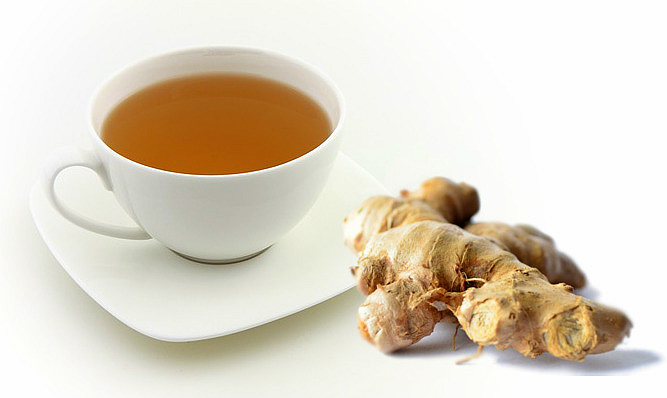
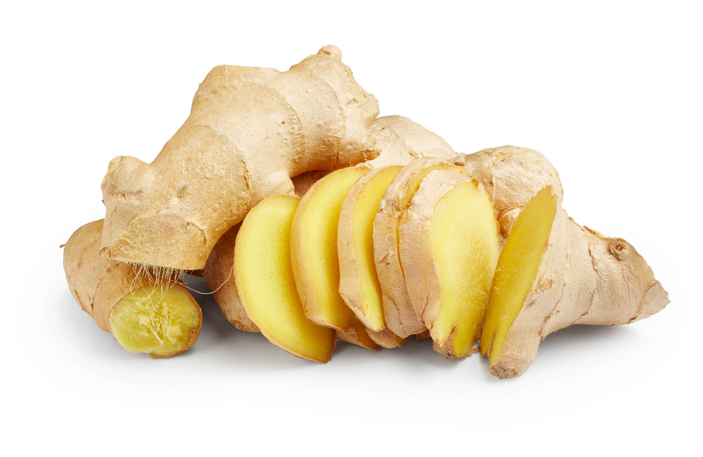

Homework #3
< Back to Home
간절기 목감기에 좋은 생강차 만들기
생강청 만드는 방법
생강의 흙이 없어지게 깨끗하게 씻고 껍질을 손질한다.
생강을 얇게 편 썰거나 체썬다.
생강과 동량의 설탕을 준비해 체썬 생강에 조금 남기고 부어 섞는다.
소독한 병에 생강을 담고 남은 설탕으로 덮은 뒤 뚜껑을 덮어 냉장보관한다.

생강의 효능
혈액순환 개선
소화기능 개선
관절 통증 개선
면역력 강화

레시피
효능
한주의 날씨